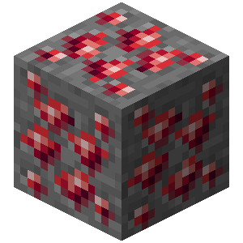

Ruby Ore is a rare ore that generates deep underground and is a reliable source of ruby.
Netherrack Ruby Ore is a variant of ruby ore that generates in netherrack and in pools of lava in The Nether.
Blackstone Ruby Ore is a variant of ruby ore that generates in blackstone in The Nether.
The ruby ore block itself (rather than its ruby drops) can be obtained by mining it with an amethyst pickaxe, tiger's eye pickaxe or above with the Silk Touch enchantment. When mined without Silk Touch, ruby ore drops a single ruby. The maximum amount of rubies dropped can be increased with Fortune.
Ruby ore can generate in the Overworld in the form of ore features. Ruby ore attempts to generate in lava 3 times per chunk in features of 1-8 ore, between Y levels 6 to 18 in all biomes.
Ruby ore can also generate in the Mining Paradise. In the mining paradise, ruby ore attempts to generate in lava 4 times per chunk in features of 1-8 ore, between Y levels 6 and 18.
Netherrack Ruby ore can also generate in The Nether. Netherrack ruby ore attempts to generate in lava 6 times per chunk, between Y levels 18 and 34. As well as next to Netherrack 8 times per chunk in features of 1 ore, between Y levels 1 and 128.
Blackstone Ruby ore can also generate in The Nether. Blackstone ruby ore attempts to generate in blackstone 4 times per chunk in features of 1-6 ore, between Y levels 1 and 128.
| Name | Ingredients | Smelting recipe |
|---|---|---|
| Ruby | Any fuel |
|
${name}
